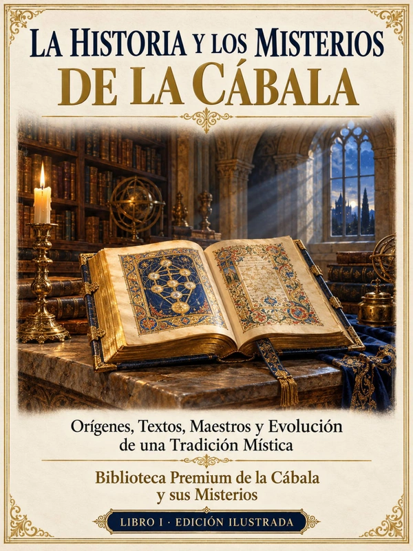

LIBRO I · 18 PÁGINAS
La Historia y los Misterios de la Cábala
Orígenes, textos, maestros y evolución de una tradición mística
- Qué es la Cábala y qué no es
- La Merkavá y la visión celestial
- Séfer Yetzirá, Bahir y el Zóhar
- Safed, Isaac Luria y Jaim Vital
- De los manuscritos a nuevos contextos
- Cinco malentendidos frecuentes